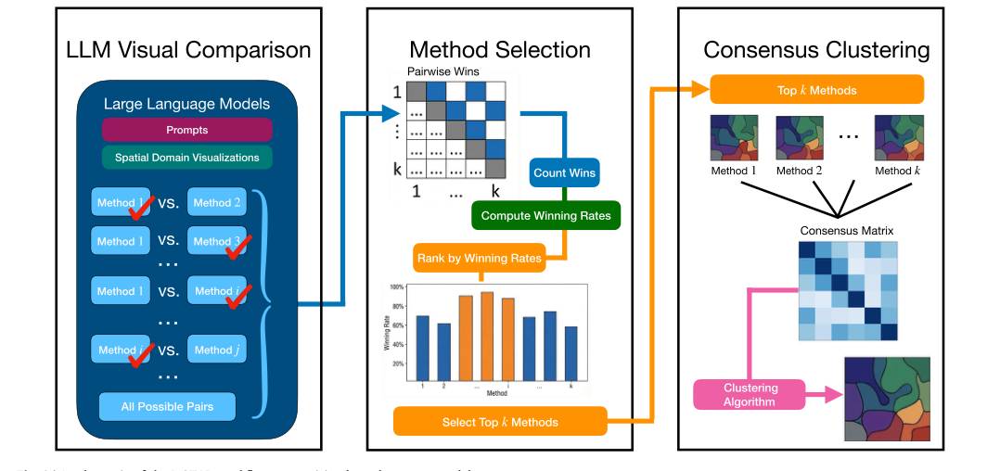
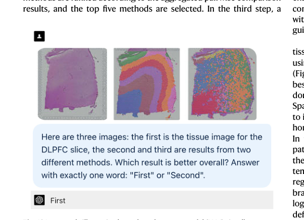
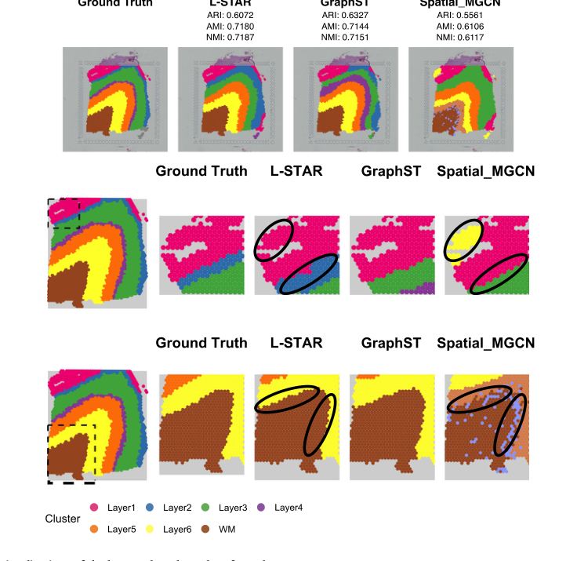
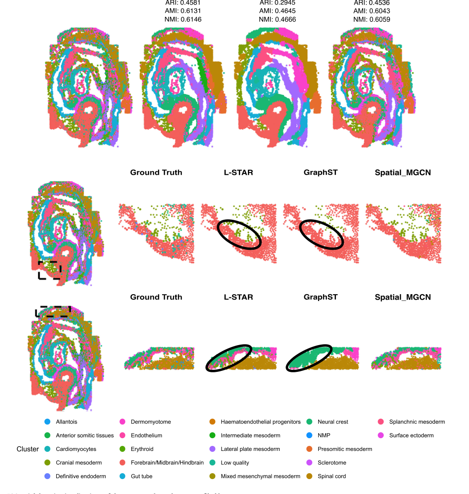
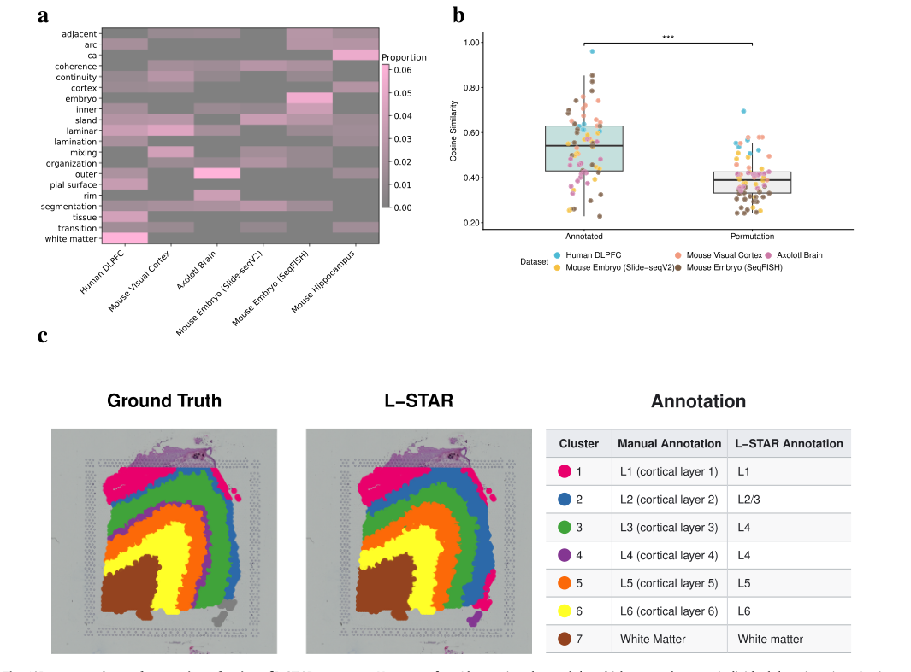

论文资料
Visual LLM-guided consensus spatial domain detection with L-STAR
已取得公开摘要，图文解读尚未完成
已取得公开摘要，图文解读尚未完成。取得完整资料并通过核验后，这个地址会更新为图文解读。
公开摘要
Spatial transcriptomics measures gene activity while preserving the locations of cells within tissue. A key analysis step is to divide the tissue into spatial domains, but the performance of computational methods varies considerably across datasets, and no single method consistently performs best. Here we show that a large language model can compare spatial domain maps and identify the better-performing methods. We developed L-STAR, which visually compares and ranks candidate methods, then builds a consensus map from the highest-ranked results. Across datasets representing different tissues, species, and technologies, L-STAR matched expert annotations more closely than individual methods or consensus analysis using a fixed set of methods. Its rankings were reproducible and generally stable when image colors or presentation order changed. L-STAR also provided rationales for its comparisons and assigned biologically meaningful names to the detected domains. These findings show that large language models can make spatial transcriptomics analysis more adaptive, robust, and interpretable.
原图未改动。以下图注来自标注的来源，不据此补写摘要未报告的实验结论。
已取得的论文原图








原文图注与出处
Fig. 5 | Spatial domain visualizations of the mouse embryo dataset profiled by sequential fluorescence in situ hybridization (SeqFISH), showing the whole- tissue view with original adjusted Rand index (ARI), adjusted mutual infor- mation (AMI), and normalized mutual information (NMI) values (top row) and
Zhao, Changyue et al.
原文图页 · CC BY 4.0已取得的论文原图


原文图注与出处
Fig. 6 | Interpretation and semantic evaluation ofL-STAR outputs. a Heatmap of occurrence proportions for the 20 keywords (y-axis) with the highest overall occurrence proportions across datasets (x-axis). b Domain-level semantic con- cordance between large language model (LLM)-generated and manual annotations. “Annotated” represents the observed cosine similarity, whereas “Permutation” represents each domain’s mean similarity across 10, 000 within-dataset permuta- tions of the manual annotations. Points represent individual domains and are colored by dataset. Boxes show the interquartile range, and the horizontal line inside each box indicates the median. The lower and upper box limits correspond to the 25th and 75th percentiles, respectively. Whiskers extend to the smallest and largest non-outlier observations within 1.5 times the interquartile range (IQR).
Zhao, Changyue et al.
原文图页 · CC BY 4.0